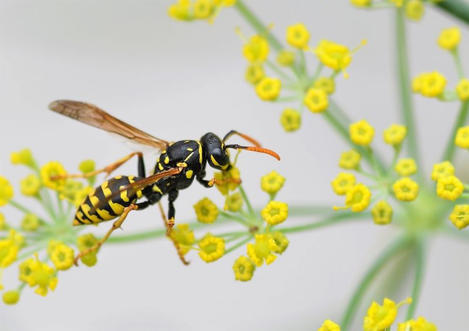

AVISPA

Las avispas son insectos voladores pertenecientes al orden Hymenoptera y al suborden Apocrita; presentes alrededor del mundo. Se diferencian de las abejas por la
delgadísima “cintura”
ue separa el abdomen del tórax. Es comúnmente conocida por la peligrosidad de su picadura y por la temeridad que produce en humanos y animales.
Mide hasta 3.8 centímetros de longitud.
Tiene varios ojos u ocelos que tienen la capacidad de diferenciar luminosidad y oscuridad y están mejor desarrollados en las especies de avispas nocturnas. Posee 2 pares de alas, 1 par grande
y otro par posterior más pequeño, unidos por una serie de ganchos llamada frenillo. Las hembras de algunas especies están desprovistas de alas. Sus antenas están formadas por una serie de segmentos denominados escapo, pedicelo y flagelo. También cuentan con piezas dentales con las que pueden morder y el cuerpo, en algunas especies, está cubierto de pelillos gruesos. Posee 3 conjuntos de 2 piernas cada uno.
La parte más asociada a la avispa es el aguijón que solo está en posesión de la hembra, puesto que dicho órgano se deriva del órgano
femenino denominado ovipositor. El color de la avispa puede ser negro o marrón oscuro. Las avispas más conocidas son negras y presentan franjas amarillas.
La avispa está presente en prácticamente todo el mundo. Sus hábitats son muy variados, pero suelen preferir sitios soleados para construir sus nidos. Estos se localizan en montículos al lado de paredes, debajo de pisos o aleros de las casas, en los árboles, en las plantas, riberas de ríos y agujeros subterráneos.
Cuando es adulta, la avispa se alimenta del néctar de las flores y en la etapa larvaria su dieta se compone de larvas, pero en general es un insecto omnívoro pues puede atrapar otros insectos pequeños para complementar su alimentación. Consume frutos caídos y hasta carroña. Si tiene crías se convierte
en depredador al cazar para proveer alimento a las larvas. No todas las avispas sociales pueden reproducirse, únicamente la reina lo hace y puede ser fertilizada por 1 o por varios machos. Después del apareamiento los espermatozoides son guardados en una bolsa ubicada en el interior de la reina para ser usados en la primavera siguiente. En otoño la mayoría de los miembros de la colonia ya han muerto y sólo permanecen con vida las jóvenes reinas que se aparearon. Es entonces cuando hibernan durante el invierno, y en el verano las
jóvenes salen y buscan un sitio para anidar y depositar los huevos fertilizados con el esperma guardado. Así, la reina edifica toda una colonia.
- Estos insectos ostentan todos los colores que podamos imaginar, desde el amarillo al que ya estamos acostumbrados, al marrón, el azul metálico o el rojo vivo.
- Todas las avispas construyen nidos.
- se dividen en dos subgrupos principales: sociales y solitarias.
- Habita en árboles y arbustos, pero también en las paredes y rincones de la casa, en agujeros, debajo de los pisos, etc
- La esperanza de vida de las avispas varía dependiendo de la función que desempeñan. Los machos estériles su esperanza de vida es de unos 60 días, las avispas obreras viven entre 20 y 30 días, pero las avispas reinas pueden vivir hasta un año.
BACK